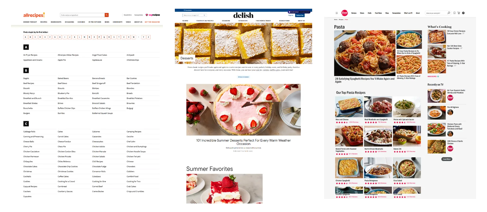
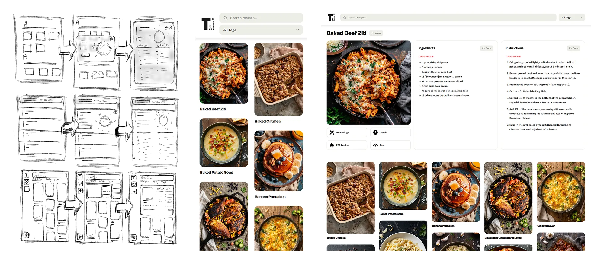
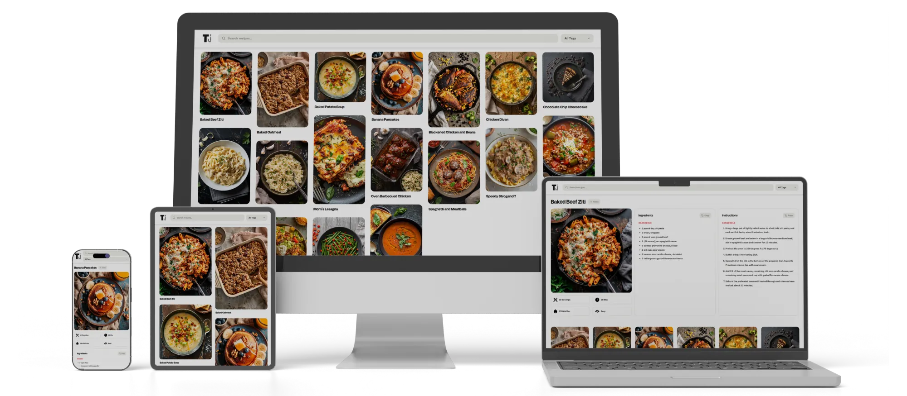

Table of Contents started as a way to give the Book family recipe collection a real home; something more usable than a folder of files, and more personal than a generic recipe app. The name plays on the family's last name and the site's function: a navigable index of recipes, like a table of contents in a book.
The design direction drew inspiration from sites like Delish and Pinterest. These sites focused on visual-first browsing where recipes read as a scannable grid of images rather than a plain list The goal was to bring that same feel to a small, private collection: easy to search by name, filter by type, and scan visually before committing to one, all without the clutter of accounts, logins, or a database to maintain.

The process started with sketching out initial wireframes, testing several different layout ideas before settling on a single-page web app design. A one-page structure kept the experience simple; no navigating between separate pages just to search, filter, or browse, everything stays in one continuous, scannable view.
Once the layout direction felt right, I built high-fidelity mockups in Figma to work out the visual details; spacing, typography, card proportions; before moving into React to start building. The trickiest problem to solve technically was the masonry grid itself the goal was left-to-right, row-first ordering with staggered card heights.

I'm genuinely happy with how Table of Contents turned out. Getting the masonry grid to run true row-first order, building a custom dropdown that stays consistent across every device, and landing on a clean, pure-white layout that lets the food photography do the work were all satisfying problems to solve. The project brought together React development, state management, and UI/UX decisions like the one-page layout.
The result is a searchable, filterable recipe collection with an expandable detail view showing image, stats, ingredients, and instructions, down to copy-to-clipboard buttons. It scales fluidly from one column on mobile to seven-plus on a wide desktop monitor. I'm proud of the finished app, and new recipes get added all the time.